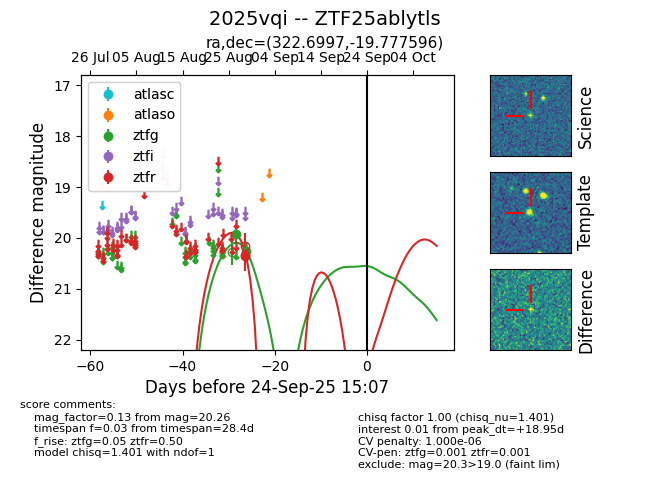
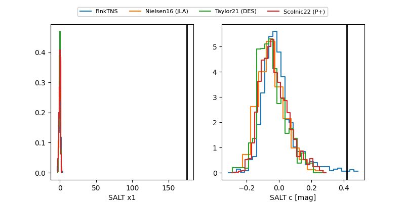

FINK: ZTF25ablytls
Lasair: ZTF25ablytls
ALeRCE: ZTF25ablytls
TNS: 2025vqi
YSE: 2025vqi
ZTF25ablytls (ztf,fink)
2025vqi (tns,yse)
equatorial (ra, dec) = (322.6997,-19.77760)
galactic (l, b) = (30.8512,-43.69577)


last ztfg=20.26, ztfr=20.33
2 ztfg, 1 ztfr detections